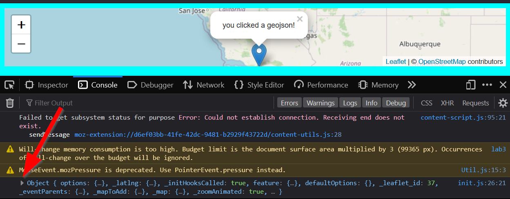
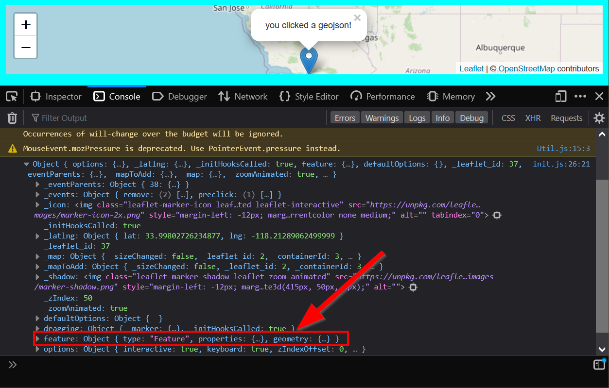
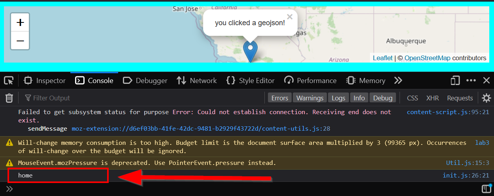

Optional: Adding more to our L.GeoJSON¶
Optional
This is an optional lab, we will cover this in the next lab.
Remember that putting a variable into a type gives you access to different methods?
Rather than just stopping at L.geoJSON(data).addTo(map) we are going to expand that part of the code to style the GeoJSON when we add it!
Clickable GeoJSON recipe¶
This is the basic Leaflet recipe for a clickable geojson:
// the leaflet method for adding a geojson
L.geoJSON(data)
.bindPopup(layer => {
return "you clicked a geojson!";
}).addTo(map);
Adding GeoJSON functionality¶
Now that we have that recipe, we need to put it somewhere… Where is the best place for it?
Answer
- This is where we added the clickable geoJSON recipe!!
- Notice we are going to a generic
you clicked a geojsonmessage here! - This is where we add the
GeoJSONto the map.
Rather than just simply returning the popup as a generic you clicked a geojson, let’s use our GeoJSON’s place property that we created in the first part of the lab!
Checking our logs!¶
Let’s console.log() our layer to see how it looks:
Where should the console.log() go?
Correct, line 3!
Now when you click the marker, this should pop-up in the console:

Object { options: {…}, _latlng: {…}, _initHooksCalled: true, feature: {…}, defaultOptions: {}, _leaflet_id: 37, _eventParents: {…}, _mapToAdd: {…}, _map: {…}, _zoomAnimated: true, … }
We can drill down into our GeoJSON by clicking on the arrows:

Find the feature property and click the arrow to expand it:

Look at the properties and notice what is in there!

Right! Those are the columns and values we created from the first part of the lab 3b!
This is called traversing the object path, and it works the same way when we linked our photos or .css. The key difference is that it is within one file!
Recapping how we got here, we:
1. Went into the object (layer)
2. Clicked on feature
3. Clicked on properties.
To access the place name, we will need to specify that with place.
As a result, our path should look like this:
OMG!! The . returns?!
Aha, very observant! Similar to chaining methods, we use the . to chain going down an object path. Why is that?! Well.. It has something to do with classes, but thats out of the scope of this class. (multiple coding puns intended.) If you really want to learn more, click here to read about Object-Oriented Programming and JavaScript: click if you dare!.
Let’s console.log() the result to make sure we have the right path down:
L.geoJSON(data
).bindPopup(layer => {
console.log(layer.feature.properties.place)
return "you clicked a geojson!"
}).addTo(map);
When you click a point, the correct value should show up:

Woo!! Now let’s return this value instead of the generic message:
L.geoJSON(data
).bindPopup(layer => {
console.log(layer.feature.properties.place)
return layer.feature.properties.place
}).addTo(map);
Now when you click on the map, the place values shows up!
Utilizing our GeoJSON’s color property¶
Before we finish this module, let’s take what we learned one step further and use our color property too.
While bindPopUp() was nice and an outside method, changing the color needs to be inside of the L.geoJSON() call. So we have to attach it to an object inside as follows:
L.geoJSON(data, { // (1)!
style: layer => { //(2)!
return {color: layer.feature.properties.color}; //(3)!
}
}).bindPopup(layer => {
return layer.feature.properties.place;
}).addTo(map);
- Here we add a
,to add a new value, and then a{to start our new object styleis what Leaflet’sL.GeoJSON()needs, so we have to use that- We are assigning our
layer.feature.properties.colorhere!
YOU LIE!!! THIS DOES NOT WORK
Correct! This code will not work because… A GeoJSON’s color property can only be set for L.CircleMarkers, lines, or polygons but not regular L.markers.
Converting our GeoJSON to CircleMarkers¶
Since {style: "red"} or any color won’t work for our marker, we need to convert it into a circle marker using the pointToLayer() method! Again, this has to be inside the L.geoJSON() because that is where Leaflet must know what color to make the features.
We will use the arrow-function so we can type fewer characters:
L.geoJSON(data, {
pointToLayer: (feature, latlng) => { //(1)!
return L.circleMarker(latlng, {color: feature.properties.color}); //(2)!
}
// ... other code here
- Here we pass in our
featureandlatlnginto the simplified=> function - Now we convert it to a
L.circleMarker(), withlatlngbeing the first parameter, then settingcolorto thefeature.properties.color.
The fetch’s final .then should now look like the following:
fetch("map.geojson")
.then(response => {
return response.json()
})
.then(data =>{
// Basic Leaflet method to add GeoJSON data
L.geoJSON(data, {
pointToLayer: (feature, latlng) => {
return L.circleMarker(latlng, {color: feature.properties.color})
}
}).bindPopup(layer => {
return layer.feature.properties.place;
}).addTo(map);
})
üèÅLast Checkpoint¶
Our final init.js file should look like this:
If everything works up until now, then you are ready to take on the lab assignment 3b!
If something is not working, check the final lab template!